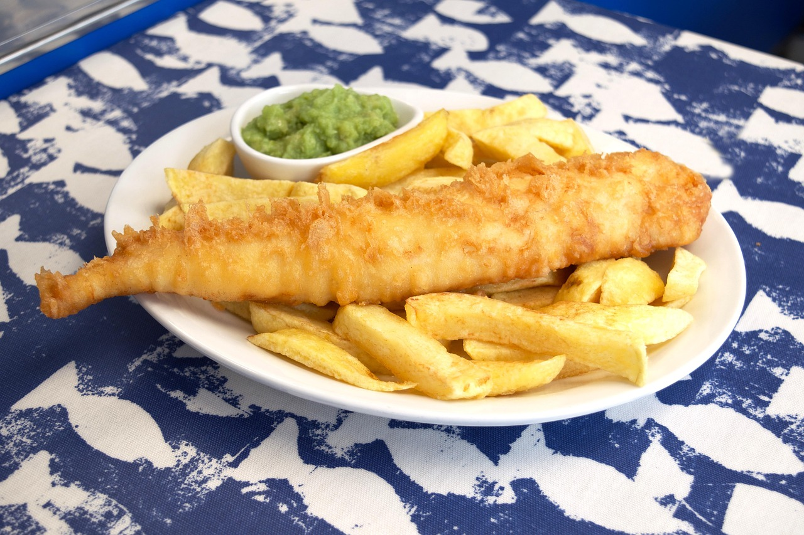

Fish and Chips Recipe
Home

Description
This is the world famous fish and chips recipe made by john fish himself!
On this page you will find all the ingredients need to make this recipe from scratch as well as the instructions to do so.
Ingredients
- 150g fish fillet
- 150g of chips
- 30g plain flour
- 60ml water
- 1 egg
- Salt
- Optional: lemon wedge
- Heat up your deep fat fryer to 300°c
- While waiting for the fryer to heat, in a mixing bowl mix the: flour, egg, and water to create a smooth batter
- Once the fryer is heated up, place in your chips and cook them for 5 minutes
- While the chips are cooking, place your fish into the batter and coat evenly
- When the chips are done, and add your fish to the same fryer and cook until golden and crispy
- Once the fish is done, plate up your chips and then your fish on top
- Season the dish with salt
- Optionally: Add a lemon wedge to the side